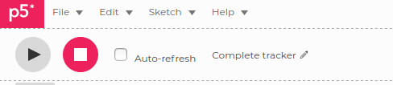
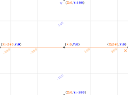
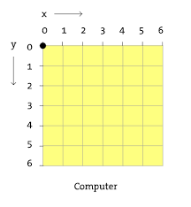
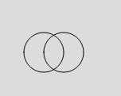
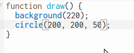

Le but de ce mini défi est d'explorer les formes et les couleurs de la librairie p5.js pour dessiner un bel... arc-en-ciel comme celui-ci.
Commencer !Le but de ce mini défi est d'explorer les formes et les couleurs de la librairie p5.js pour dessiner un bel... arc-en-ciel comme celui-ci.
Commencer !Première chose avant de commencer à travailler sur n'importe quel projet p5.js: connecte-toi à ton compte en cliquant sur "Log in".

Si tu n'as pas de compte p5.js, il faut le créer ainsi:
Clique sur ce lien https://editor.p5js.org/
Par défaut, l'éditeur p5.js a nommé mon projet "Complete tracker". C'est marrant, mais pas très descriptif de mon projet. Je vais le renommer "Ça va bien aller!"
Toi aussi, renomme ton projet en cliquant sur le petit crayon .
Il y a plusieurs façon de réussir ce défi! Je vais t'en montrer deux, mais tu peux en trouver d'autres! L'important, c'est de toujours commencer avec la façon la plus simple et d'y aller étape par étape.
Chaque étape doit être toute petite et tu dois t'assurer que le code fonctionne avant de passer à la prochaine étape!
Une fois que leur code fonctionne, les programmeuses et programmeurs (je vais les appeler les "devs") essaient alors de le refactoriser, c'est-à-dire de réduire sa taille et le rendre plus élégant. Ce n'est pas facile... et honnêtement, ce n'est pas le plus important à ce stade-ci!
On y va! Notre première toute petite étape, c'est d'arriver à dessiner un cercle rouge en plein millieu du canvas.
RAPPEL: la taille de ton canvas est déterminée dans la fonction setup() qui ne s'exécute qu'une seule fois. La fonction draw(), quant à elle, est exécutée plusieurs fois par secondes.
Pour dessiner un cercle, tu auras besoin de la fonction en p5.js circle(). Dans la fonction draw(), essaie ceci:
function setup() {
createCanvas(400, 400);
}
function draw() {
background(220);
circle(200, 300, 100);
}
À ton avis, que veulent dire les nombres 200, 300 et 100 qui sont à l'intérieur des parenthèses de la fonction circle()?
Pour comprendre comment fonctionnent les fonctions (instructions) en p5.js, il faut lire la documentation.
😱
Eh oui... même en programmation, il faut lire... 🤓
On a de la chance car la documentation de p5.js est bien faite!
la fonction circle(). Cette fonction prend notamment 3 paramètres. Le concept de paramètre est très important en programmation! Ça nous permet de réutiliser une fonction mais en modifiant quelques éléments.
Pour la fonction circle(), les trois paramètres sont x, y et d. X et Y, ce sont les coordonnées du centre du cercle, D c'est le diamètre du cercle.
Si j'écris circle(200, 300, 50) cela veut dire que mon cercle aura comme coordonnées d'origine (200, 300). Le diamètre sera de 50.
Comment fonctionnent les coordonnées dans la librairie p5.js? Pas comme dans Scratch où le point (0, 0) se trouve au beau milieu de la scène:
En p5.js, l'origine se trouve plutôt en haut à gauche:
Essaie de programmer deux cercles supperposés, comme ceci:
En passant, pour copier facilement une ligne, tu peux mettre ton curseur sur la ligne et appuyer les touches ctrl + shift + d:
Si tu arrives à un résultat de ce genre, c'est que la couleur intérieure de ton cercle est blanche. Il te faut une couleur... transparente!
Avec le challenge En 2020, je serai..., on a vu que les couleurs pouvaient s'exprimer grâce à un code hexadécimal. Elles peuvent aussi s'exprimer grâce à un code RGBA. Ce code a 4 valeurs. Les 3 premières sont un nombre entier entre 0 et 255. La quatrième valeur est un nombre entre 0 et 1.
Voici un exemple pour la couleur bleue: rgba(0,0,255,1). Pour la couleur rouge: rgba(255,0,0,1). À ton avis, quel sera le code pour la couleur verte? (Green en anglais... pense au code rGba)
rgba(0,255,0,1)
La quatrième valeur du code RGBA te donne l'opacité de la couleur. Lorsque cette valeur est 1, la couleur est opaque. À l'inverse, lorsque la valeur est à 0, la couleur est transparente.
Comment utiliser le code RGBA dans notre programme p5.js? Avec les fonctions color() et fill() (remplir):
let c = color('rgba(0,0,0,0)');
fill(c);
circle(200, 200, 50);
Pour changer la couleur du trait de tes cercles, utilise la fonction stroke()
Maintenant que tu connais les fonctions de base, amuse-toi à ajouter d'autres formes (carrés, rectangles, lignes, triangles...) Tout est dans la documentation de la librairie p5.js!